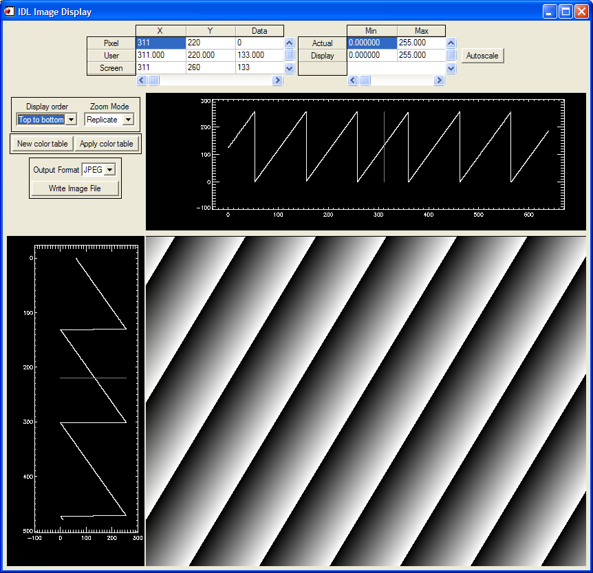
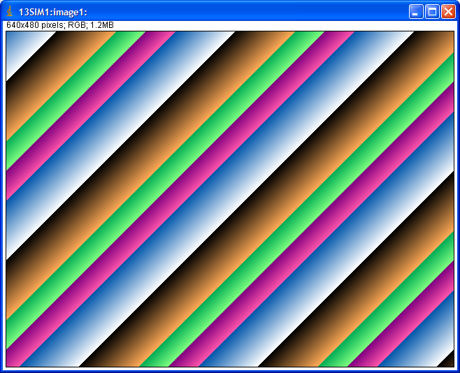
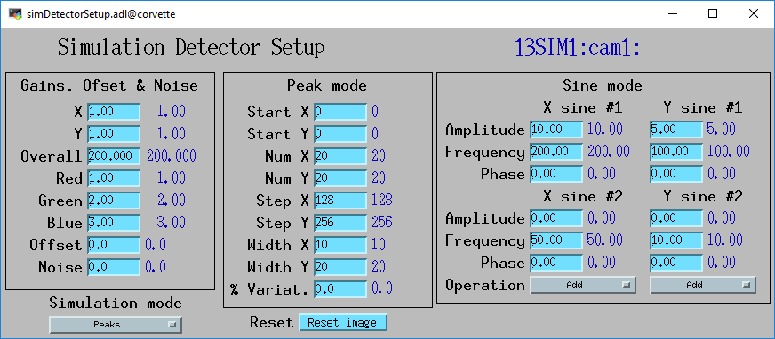
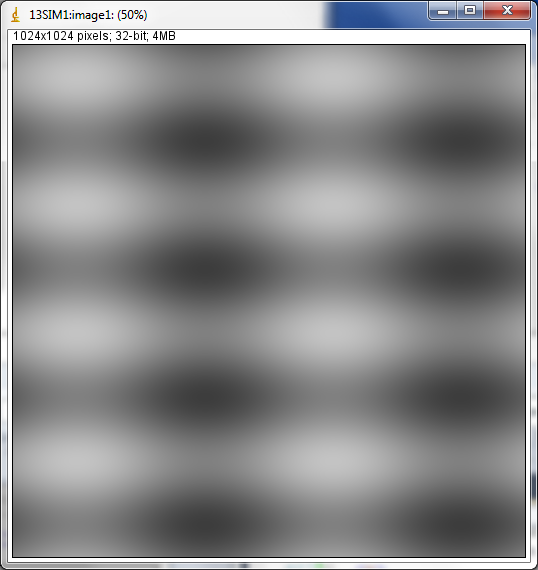

ADSimDetector¶
| author: | Mark Rivers (University of Chicago), John Hammonds (Argonne National Laboratory) |
|---|
Table of Contents¶
Contents
- ADSimDetector
- Table of Contents
- Introduction
- Simulation driver specific parameters
- Simulation Modes
- Unsupported standard driver parameters
- Configuration
- Screenshots
- simDetector.adl
- Linear Ramp Mode
- Ramp Mode
- Simulation setup screen with Peaks mode selected
- ImageJ display with the above Peaks mode parameters
- Simulation setup screen with simple Sine mode setup
- ImageJ display with the above simple Sine mode parameters
- Simulation setup screen with complex Sine mode parameters
- ImageJ display with the above complex Sine mode parameters
- ImageJ X profile with the above complex Sine mode parameters.
- ImageJ Y profile with the above complex Sine mode parameters.
- Simulation setup screen with Sine mode parameters in RGB1 color mode
- ImageJ display with the above color Sine mode parameters.
Introduction¶
This is an EPICS areaDetector driver for a simulated area detector. The simulation detector is useful as a model for writing real detector drivers. It is also very useful for testing plugins and channel access clients.
This driver inherits from ADDriver. It implements nearly all of the parameters in asynNDArrayDriver.h and in ADArrayDriver.h, with the exception of the file saving parameters, which it does not implement. It also implements a few parameters that are specific to the simulation detector. The simDetector class describes this class in detail.
The writeInt32 and writeFloat64 methods override those in the base
class. The driver takes action when new parameters are passed via
those interfaces. For example, the ADAcquire parameter (on the
asynInt32 interface) is used to turn acquisition (i.e. computing new
images) on and off.
Simulation driver specific parameters¶
The simulation driver-specific parameters are the following:
| Parameter Definitions in simDetector.cpp and EPICS Record Definitions in simDetector.template | |||
|---|---|---|---|
| Description | drvInfo string | EPICS record name | EPICS record type |
| Gain in the X direction | SIM_GAINX | $(P)$(R)GainX, $(P)$(R)GainX_RBV | ao, ai |
| Gain in the Y direction | SIM_GAINY | $(P)$(R)GainY, $(P)$(R)GainY_RBV | ao, ai |
| Gain of the red channel | SIM_GAIN_RED | $(P)$(R)GainRed, $(P)$(R)GainRed_RBV | ao, ai |
| Gain of the green channel | SIM_GAIN_GREEN | $(P)$(R)GainGreen, $(P)$(R)GainGreen_RBV | ao, ai |
| Gain of the blue channel | SIM_GAIN_BLUE | $(P)$(R)GainBlue, $(P)$(R)GainBlue_RBV | ao, ai |
| The offset added to the image. | SIM_OFFSET | $(P)$(R)Offset, $(P)$(R)Offset_RBV | ao, ai |
| The amount of random noise added to the image. | SIM_NOISE | $(P)$(R)Noise, $(P)$(R)Noise_RBV | ao, ai |
| Set to 1 to reset image back to initial conditions | RESET_IMAGE | $(P)$(R)Reset, $(P)$(R)Reset_RBV | longout, longin |
Sets the simulation mode. Options are:
|
SIM_MODE | $(P)$(R)SimMode, $(P)$(R)SimMode_RBV | mbbo, mbbi |
| Parameters for Array of Peaks Mode | |||
| X location of the first peak centroid | SIM_PEAK_START_X | $(P)$(R)PeakStartX, $(P)$(R)PeakStartX_RBV | longout, longin |
| Y location of the first peak centroid | SIM_PEAK_START_Y | $(P)$(R)PeakStartY, $(P)$(R)PeakStartY_RBV | longout, longin |
| X width of the peaks | SIM_PEAK_WIDTH_X | $(P)$(R)PeakWidthX, $(P)$(R)PeakWidthX_RBV | longout, longin |
| Y width of the peaks | SIM_PEAK_WIDTH_Y | $(P)$(R)PeakWidthY, $(P)$(R)PeakWidthY_RBV | longout, longin |
| Number of peaks in X direction | SIM_PEAK_NUM_X | $(P)$(R)PeakNumX, $(P)$(R)PeakNumX_RBV | longout, longin |
| Number of peaks in Y direction | SIM_PEAK_NUM_Y | $(P)$(R)PeakNumY, $(P)$(R)PeakNumY_RBV | longout, longin |
| X step between peaks | SIM_PEAK_STEP_X | $(P)$(R)PeakStepX, $(P)$(R)PeakStepX_RBV | longout, longin |
| Y step between peaks | SIM_PEAK_STEP_Y | $(P)$(R)PeakStepY, $(P)$(R)PeakStepY_RBV | longout, longin |
Used to introduce randomness in the peak height. If non-zero then each gaussian peak in the array is assigned a scaling factor: scalingFactor = 1.0 + (rand() % peakVariation + 1) / 100.0
|
SIM_PEAK_HEIGHT_VARIATION | $(P)$(R)PeakVariation, $(P)$(R)PeakVariation_RBV | longout, longin |
| Parameters for Sine Mode | |||
The operation to use to combine XSine1 and XSine2. Choices are:
|
SIM_XSIN_OPERATION | $(P)$(R)XSineOperation, $(P)$(R)XSineOperation_RBV | mbbo, mbbi |
The operation to use to combine YSine1 and YSine2. Choices are:
|
SIM_YSIN_OPERATION | $(P)$(R)YSineOperation, $(P)$(R)YSineOperation_RBV | mbbo, mbbi |
| The amplitude of the sine wave. There is a record for each of the 4 sine waves: XSine1, XSine2, YSine1, YSine2. | SIM_[X,Y]SIN[1,2]_AMPLITUDE | $(P)$(R)[X,Y]Sine[1,2]Amplitude, $(P)$(R)[X,Y]Sine[1,2]Amplitude_RBV | ao, ai |
| The frequency of the sine wave. A frequency of 1 means there is one complete period of the sine wave across the image in the X or Y direction. There is a record for each of the 4 sine waves: XSine1, XSine2, YSine1, YSine2. | SIM_[X,Y]SIN[1,2]_FREQUENCY | $(P)$(R)[X,Y]Sine[1,2]Frequency, $(P)$(R)[X,Y]Sine[1,2]Frequency_RBV | ao, ai |
| The phase of the sine wave in degrees. A phase of 90 is the same as a cosine wave. There is a record for each of the 4 sine waves: XSine1, XSine2, YSine1, YSine2. | SIM_[X,Y]SIN[1,2]_PHASE | $(P)$(R)[X,Y]Sine[1,2]Phase, $(P)$(R)[X,Y]Sine[1,2]Phase_RBV | ao, ai |
Simulation Modes¶
Linear Ramp¶
For monochrome images (NDColorMode = NDColorModeMono) the simulation
driver initially sets the image[i, j] = i * SimGainX + j * SimGainY *
ADGain * ADAcquireTime * 1000. Thus the image is a linear ramp in the
X and Y directions, with the gains in each direction being detector-
specific parameters. Each subsquent acquisition increments each pixel
value by ADGain * ADAcquireTime * 1000. Thus if ADGain = 1 and
ADAcquireTime = .001 second then the pixels are incremented by 1. If the
array is an unsigned 8 or 16 bit integer then the pixels will overflow
and wrap around to 0 after some period of time. This gives the
appearance of bands that appear to move with time. The slope of the
bands and their periodicity can be adjusted by changing the gains and
acquire times.
For color images (NDColorMode = NDColorModeRGB1/RGB2/RGB3) there are
3 images computed, one each for the red, green and blue channels. Each
image is computed with the same algorithm as for the monochrome case,
except each is multiplied by its appropriate gain factor (SimGainRed,
SimGainGreen, SimGainBlue). Thus if each of these color gains is 1.0
the color image will be identical to the monochrome image, but if the
color gains are different from each other then image will have color
bands.
Array of Peaks¶
For monochrome images, an array of gaussian peaks is produced. The
user specifies the start location for the first peak in PeakStartX &
PeakStartY. The size of the peak is controlled by PeakWidthX and
PeakWidthY. The array is specified by giving the number of peaks in
each direction with PeakNumX and PeakNumY and the step size between
peak centroids with PeakStepX and PeakStepY. The amplitude of each
peak is controlled by SimGainX, SimGainY, and ADGain. If
SimGainX = 1, SimGainY = 1, SimNoise = 0, and
SimPeakHeightVariation = 0 then the peak height is equal to ADGain,
ADGain = 255 would be appropriate for an 8-bit image. Note that data for
each peak is only added to the image over a range of four times the
PeakWidth in any direction (in the interest of speed).
Dynamic behavior can be introduced into the system by changing
PeakVariation and Noise records. PeakVariation introduces variation
in the height of each peak in the array and Noise introduces variation in
each pixel.
The description for RGB images is the same as for the Linear Ramp. Pixels are computed the same way as for monochrome and there is a separate gain for each color.
Sine¶
The image is constructed from 2 sine waves in the X direction and 2 sine waves in the Y direction. The amplitude, frequency, and phase of each of the 4 sine waves can be controlled. The two sine waves in each direction can be combined either by addition or by multiplication. There also global offset and noise parameters. Each sine wave is constructed using the following equation:
X/YSine[i] = Amplitude * sin((Count[X,Y] * Gain[X,Y] / Size[X,Y] * Frequency + Phase/360) * 2 * PI)
where
Count[X,Y]is an integer counter that increments by 1 for each element of the sine wave for each new image. It reset to 0 when the image is reset with SimResetImage, or when the image dimensions or datatype are changed.Amplitudesets the sine-wave amplitude. The peak-to-peak value is twice this.iis an index that goes from 0 to the image dimension SizeX or SizeY.Gain[X,Y]isGainXorGainYdefined above.Size[X,Y]isSizeXorSizeY, the number of pixels in the X or Y direction.Frequencyis the sine wave frequency.Frequency= 1 is one full period across the image.Phaseis the phase angle in degrees.
There are 4 separate values for Amplitude, Gain, and Frequency, one for each of the 4 sine waves.
If the Frequency is an integer then there will be an integer number of sine wave periods across the image, and these will appear to be stationary from one image to the next. If Frequency is not an integer then there will be a non-integer number of periods across the image, and the sine wave will appear to move from one image to the next. This is because Count[X,Y] is not reset to 0 for each new image.
In monochrome mode the following equation is used to construct each image:
Value[i,j] = Gain * (Offset + (Noise * random) + XSine1[i] (+ or *) XSine2[i] + YSine1[j] (+ or *) YSine2[j])
where
Gainis the overall image gain defined inADBase.template.Noiseis the overall noise level in the image.randomis a random number in the range -1 to 1 that is different for each pixel in the image.iis an index that goes from 0 to the image dimension SizeX.jis an index that goes from 0 to the image dimension SizeY.XSine1,XSine1,YSine1,YSine2are the 4 sine waves described above.(+ or -)is either addition or multiplication depending on the value ofXSineOperationandYSineOperationdescribed above.
In color mode (NDColorMode = NDColorModeRGB1/RGB2/RGB3) the
following equations are used to construct each image:
Red[i,j] = Gain * GainRed * (Offset + (Noise * random) + XSine1[i])
Green[i,j] = Gain * GainGreen * (Offset + (Noise * random) + YSine1[j]
Blue[i,j] = Gain * GainBlue * (Offset + (Noise * random) + (XSine2[i] + YSine2[j]) / 2))
where the values have the same meaning as for monochrome images, and
GainRed, GainGreen, and GainBlue are the same as for Linear Ramp
mode explained above. Note that the red image is a single sine wave in the
X direction (XSine1), the green image is a single sine wave in the Y
direction (YSine1), and the blue image is the sum of XSine2 and
YSine2.
Unsupported standard driver parameters¶
- Collect: Number of exposures per image (ADNumExposures)
- Collect: Trigger mode (ADTriggerMode)
- File control: No file I/O is supported
Configuration¶
The simDetector driver is created with the simDetectorConfig command, either from C/C++ or from the EPICS IOC shell:
int simDetectorConfig(const char *portName,
int maxSizeX, int maxSizeY, int dataType,
int maxBuffers, size_t maxMemory,
int priority, int stackSize)
The simDetector-specific fields in this command are:
maxSizeXMaximum number of pixels in the X direction for the simulated detector.maxSizeYMaximum number of pixels in the Y direction for the simulated detector.dataTypeInitial data type of the detector data. These are the enum values forNDDataType_t, i.e.- 0: NDInt8
- 1: NDUInt8
- 2: NDInt16
- 3: NDUInt16
- 4: NDInt32
- 5: NDUInt32
- 6: NDFloat32
- 7: NDFloat64
For details on the meaning of the other parameters to this function refer to the detailed documentation on the simDetectorConfig function in the simDetector.cpp and in the documentation for the constructor for the simDetector class.
There an example IOC boot directory and startup script (Example st.cmd Startup File) provided with areaDetector.
Screenshots¶
{kind=link}
Linear Ramp Mode¶
The following is an IDL epics_ad_display screen using image_display to display the simulation detector in monochrome linear ramp mode.
IDL epics_ad_display.pro display of simulation detector in monochrome
{kind=link}
Ramp Mode¶
The following is an ImageJ plugin EPICS_AD_Viewer screen displaying the simulation detector in color linear ramp mode.
ImageJ EPICS_AD_Viewer display of simulation detector in color linear
{kind=link}
Simulation setup screen with Peaks mode selected¶
This is an example of the MEDM screen that provides access to the specific parameters for the simulation detector. In this case Peaks mode is selected.
{kind=link}
{kind=link}
Simulation setup screen with simple Sine mode setup¶
This is a simple example of Sine mode. The XSine1 frequency is 2 and
the YSine1 frequency is 4. The Sine2 amplitudes are zero, so there is
a single sine wave in each direction.
{kind=link}
ImageJ display with the above simple Sine mode parameters¶
{kind=link}
This is a complex example of Sine mode. There are 2 sine waves in each direction, with multiplication in X and addition in Y.
{kind=link}
{kind=link}
{kind=link}
{kind=link}
Simulation setup screen with Sine mode parameters in RGB1 color mode¶
This is a example of Sine mode in RGB1 color mode.
- The red signal is controlled by a horizontal sine wave with a frequency of 2 and a phase of 90 degrees.
- The green signal is controlled by a vertical sine wave with a frequency of 4 and a phase of 45 degrees.
- The blue signal is controlled by the sum of sine waves in the horizontal with a frequency of 5 and in the vertical with a frequency of 20.
{kind=link}
{kind=link}